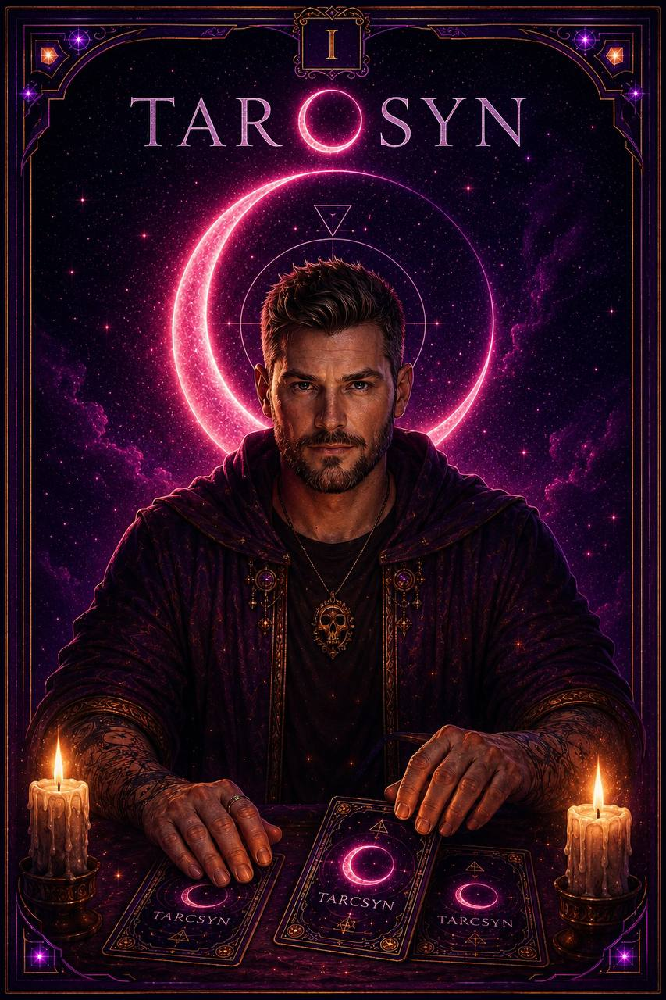

One-off readings
Start from zero
- Generic card meanings
- No memory of past pulls
- Insight disappears after the session
PERSONALIZED TAROT + ASTROLOGY
Tarosyn weaves your birth chart, past cards, and private reflections into guidance that remembers where you’ve been—and meets you where you are now.
A READING SHOULD FEEL LIKE YOURS
Tarosyn is different by design. Each session can build on your chart, your questions, and the patterns already unfolding—so the value compounds instead of resetting.
One-off readings
The Tarosyn practice
YOUR FIRST READING
Start light. Add more context only when you want a richer interpretation.
Choose what’s on your mind and the kind of guidance you want today.
No tarot experience needed.Select one of eight distinct mystic voices, or let the moment choose for you.
Switch guides anytime.Receive a personalized interpretation, save it to your vault, and add your own note.
Your practice starts remembering.No card required. Upgrade only if it becomes part of your practice.
ONLY IN TAROSYN
Upload a photo and forge a one-of-one Hero Card inspired by your energy. It’s a personal ritual, a collectible, and the kind of reveal you’ll actually want to share.

A PRACTICE THAT COMPOUNDS
Tarosyn connects the moments that usually live in separate apps: the reading, the chart, the journal, and the people you trust.
Every reading, recurring card, and reflection lives in one private timeline. Look back across weeks or months and notice what keeps asking for your attention.

Add your birth details once. Natal placements, lunar cycles, and transits become meaningful context—not decorative data.

Share a reading, explore synastry, or invite friends into your circle without making your private practice public.

THE FIRST CIRCLE IS FORMING
Tarosyn is opening its first circle, so you won’t find manufactured star counts or anonymous praise here. See the product, try a reading for free, and decide from your own experience.
A GROUNDED KIND OF MYSTICAL
No. Tarosyn is a reflection practice with memory—not a machine that claims to know your future.
Use a reading as a prompt for reflection, not an instruction. Your judgment always comes first.
Your chart and history shape the lens. Tarosyn offers possibilities and patterns—not fixed outcomes.
Your vault is your space. Sharing and community features are choices, never the price of participation.
START WITH THE EXPERIENCE
No credit card at the door. Upgrade only when Tarosyn earns a place in your practice.
Begin free
Create your chart, meet a guide, pull a daily card, and receive your first reading.
Annual circle
The full Tarosyn practice for the equivalent of $5 per month.
Mystic monthly
Full access with the flexibility to leave whenever you choose.
Luna packs for Hero Card forging are available separately from $2.99. Subscription terms are shown before purchase.
QUESTIONS, ANSWERED
Still wondering if Tarosyn is for you? Start here—or try the free reading and let the experience answer.
Ask us something elseNot at all. Tarosyn explains each card and connection in plain language. Experienced readers can still use the deeper chart, spread, and pattern layers.
No. Tarosyn is designed for entertainment and self-reflection. Readings offer themes, questions, and possibilities—not guaranteed outcomes or professional advice.
Your date, time, and place of birth are used to calculate your natal chart and bring relevant astrological context into readings. You can begin with less context if you prefer.
With your permission, Tarosyn can draw from your chart, saved readings, recurring cards, selected guide, and reflections. The more context you keep, the more continuity future readings can have.
You can create your profile, begin your chart, meet a guide, and experience your first reading without entering a payment card. Current upgrade terms are shown before checkout.
Yes. Monthly plans can be canceled anytime. Annual plans include a 14-day free trial, with billing terms shown clearly before you subscribe.
Yes. Tarosyn is web-first and designed for modern mobile and desktop browsers, so updates arrive without waiting for an app-store release.
YOUR PRACTICE CAN START SMALL
Start free and see what changes when a reading is allowed to remember you.
Start your free reading Free to start. No payment card required.